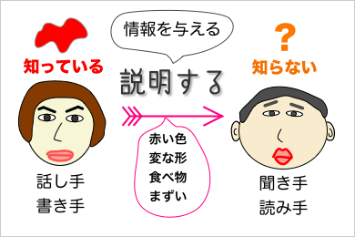
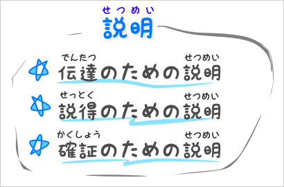
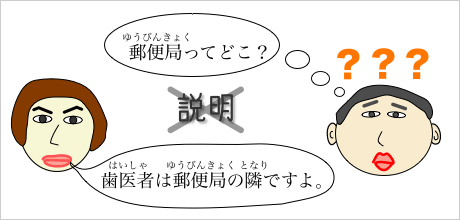

理由や内容の説明
論文は、理論に基づいた自分独自の主張を論理的に書くものである。そこでは、主張の根拠や判断の理由、理論や説の内容などの説明も必要になる。ここでは、説明する表現について学ぶ。
説明とは
読み手（聞き手）が知らないことについて、書き手（話し手）が詳しい情報を与えることを『説明』という。

説明は、その目的に応じて、(1)伝達のための説明、(2)説得のための説明、(3)確証のための説明の３つに分けることができる。なお、伝達のための説明は主に〈報告〉で行なわれ、説得のための説明は主に〈意見文〉で行なわれ、確証のための説明は主に〈論文〉で行なわれると考えてよい。

伝達のための説明
すでに述べたように、説明とは、「読み手の知らない情報を与える」ことである。伝達のための説明とは、読み手に情報を与えること自体を目的として行なわれる説明のことである。
たとえば、目的地までの道順を教えたり、コンピュータの操作方法を教えたりするといったことは、伝達のための説明のわかりやすい例であろう。
説得のための説明
説得とは、「ことばで相手を納得させる」ということである。私たちは、相手を納得させるために、いろいろなことを約束したり、謝罪をしたり、説明したりするのである。つまり、説得のための説明とは、状況や事情、理由や背景などを特定の相手に知らせるために行なわれるものである。
たとえば、「お金を貸してくれ。」と言っても、それだけでは誰もお金を貸してくれないだろう。お金を借りるには、「銀行にあと３元しかない。」とか「子供が病気で、治療費がかかった。」のような理由や背景を、相手が納得するまで説明し続けなければならないだろう。
確証のための説明
確証とは、確実な証拠を示すことで、万人に対して真実を明らかにするということである。そのためには、ある事柄の根拠や理由を、正確に・詳しく述べる必要がある。確証のための説明は、多くの人々に真実が何かを知らせるだけでなく、それを理解させるために行なわれるものである。
説明の要件
すでに述べたように、説明とは、読み手が知らないことについて、詳しい情報を与えることである。

そのため、説明をするときには、読み手が何を知っていて、何を知らないのかを、まず知らなければならない。たとえば、「ダブルクリック」という語の意味がわからない人に、「アイコンをダブルクリックしてください。」といっても何の説明にはならないし、郵便局の場所を知らない人に、「歯医者は郵便局の隣です。」といっても何の説明にもならないだろう。
会話ならば、目の前にいる相手に合わせて情報を提供すればよい。もし情報の中にわからない点があっても、相手がさらに質問をしてくるだろうから、それほど深く考える必要もない。しかし、文章では、事情が異なる。オンラインでのチャットなどを除き、書き手と読み手とは別々の場所（あるいは時間）にいるのが普通であり、わからない点を書き手にすぐに質問したりすることはできない。また、実用文などでは読み手があらかじめ決まっているが、論文のように読み手が不特定多数である場合もある。
そのため、文章では、読み手の知識をあらかじめよく推測しなければならない。しかし、読み手が不特定である場合、読み手の知識を推測するのは、必ずしも簡単ではない。そのような場合は、「自分を基準として考える」のがよいことが多い。たとえば、自分が論文を書くために調べて新しく知ったことは、読み手にとっても新しい知識だと考えればよいわけである。
また、説明で読み手に与えられる情報は、詳しいだけではなく、正確で、わかりやすいものでもなければならない。もしも、説明の内容に誤りがあった場合には、あなたが相手にウソをついたか、相手を騙そうとしていたことになってしまうだろう。これは、誠実な態度ではない。また、相手が説明の内容を理解できないようでは、伝達・説得・確証といった目的も果たせない。
作文での説明
たとえば、作文で行なわれる説明は、主に『伝達のための説明』と『説得のための説明』である。
作文は、自分の経験や体験をもとに書かれるものである。しかし、自分の経験や体験は、読み手が知らないことであるから、まず、『伝達のための説明』を行なう必要があるわけである。ここでの『伝達のための説明』とは、自分の経験や体験に関する詳しい情報を読み手に与えるということである。
また、読み手を自分の意見に同意させたり、自分の考えに共感させたりするためには、『説得のための説明』が必要になる。このことは、特に意見文で重要になる。
伝達のための説明の基本
『伝達のための説明』の基本は、詳しく、正確に事実を記述することである。
一般に、詳しく説明すればするほど、正確な説明になるということができる。詳しく説明するということは、細かい部分まできちんと述べるということである。たとえば、「私は地球に住んでいます。」というよりも、「私は台湾の苗栗縣造橋郷に住んでいます。」という方が、詳しくて、正確な説明だといえる。
しかし、詳しすぎる説明は、文章を読みにくいものにしてしまう。たとえば、「あなたはどこに住んでいますか？」と質問されたとき、「台湾の苗栗縣にある談文村というところ住んでいます。」というのは、詳しい説明といえるが、「私は、太陽系第三惑星地球内台湾苗栗縣造橋郷談文村168號にある鉄筋コンクリートの建物の１階の部屋の中に住んでいます。」というのは詳しすぎる説明といってよい。
詳しく説明するということは、あらゆる情報をすべて記述するということではなく、必要な情報をすべて記述するということなのである。
なお、必要な情報とは、読み手が知りたいと思う情報のことであるといってよい。もし、友達があなたに「旅行に行った。」としか言わないなら、あなたは「いつ行ったの？」「どこへ行ったの？」「だれと行ったの？」「何をしに行ったの？」などと尋ねたくなるだろう。つまり、これらの『いつ』『どこへ』『だれと』『何をしに』は、すべて必要な情報なのである。
説得のための説明の基本
『説得のための説明』の基本は、関連する情報を追加することである。
次の例では、①から⑥までが、すべて関連する情報になっている。
先生、お金を貸してください。①いま、お金がないんです。②病気で、アルバイトができなかったんです。③薬代もかかってしまって。④両親も借金があって大変ですし。⑤食べ物も満足に買えないんです。⑥お腹がすいて死にそうです。100元でもいいので、貸してもらえませんか。
これで「先生」が説得されてお金を貸してくれるかどうかは別にして、『説得のための説明』が、関連する情報を追加することで行なわれることはわかるであろう。
レポート（報告／論文）での説明
レポート（報告／論文）で行なわれる説明は、主に『伝達のための説明』と『確証のための説明』である。
報告は、事実やデータの記述を目的にするものであるから、正確で詳しい記述、つまり、『伝達のための説明』が求められることになる。
一方、論文の目的は、不特定多数の読み手に確証を示すことである。すでに見たように、特定の相手を説得しようとするときには、関連する情報を追加していくのであった。しかし、論文での説明は、詳しい情報を与えることで相手を納得させるために行なわれるのではない。論文の説明では、正確な情報を提示することによって、考えられうる可能性を減らすことが目指されるのである。
たとえば、ある漁港の水揚げ高が年々減少しているとき、その理由には様々な可能性が考えられる。近くの漁港との競争に敗れたのかもしれないし、大きな工場などができて漁業人口が減ったのかもしれないし、海流の変化で魚が減ってしまったのかもしれないし、あるいは、単なる偶然かもしれない。ここで、その中のどれが実際に存在する理由なのかを合理的に決定することができれば、理由として考えられうる可能性を減少させることになる。それこそが、『確証のための説明』に期待されることなのである。
たとえば、「海流が変化したというデータは存在しない」という情報を正確に提示する（＝『確証のための説明』）ことができれば、ある漁港の水揚げ高が年々減少している理由として考えられうる可能性を１つ減少させることができるというわけである。
あるいは、「漁業人口が大幅に減った」という情報を正確に提示する（＝『確証のための説明』）ことができれば、ある漁港の水揚げ高が年々減少している理由のことの有力な候補となり、「単なる偶然である」などの可能性を排除することができるだろう（結果として、考えられうる可能性をいくつか減少させることができる）。
確証のための説明の基本
『確証のための説明』では、主観を交えずに事実を記述することが重要である。そのために、正確な資料や（正しい）事実をたくさん集めなければならないことはいうまでもない。
『確証のための説明』には、大きく(a)実例によるもの、(b)定義によるもの、(c)データによるものなどがある。具体的な説明の方法には次のようなものがある。
- 実例によるもの
-
- 事実での証明による説明
- 複数のものの比較による説明
- 対象となる事柄の背景や意義による説明
- 定義によるもの
-
- 定義による説明
- 分類や種類を列挙する説明
- データによるもの
-
- 数値データや実験結果による説明
- モデルや図表、数式、一覧表を用いる説明